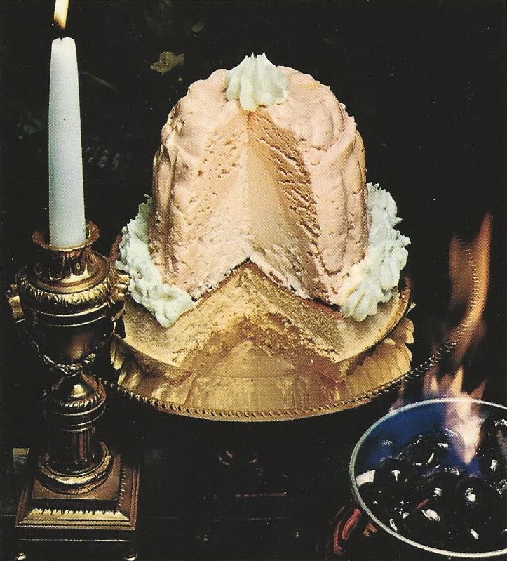

ICE-CREAM BOMBE JUBILEE

For an unforgettable and spectacular birthday dessert, try this cake and
ice-cream concoction, served with cherries jubilee
INGREDIENTS
- 1 qt slightly soft peach ice cream
- 1 qt vanilla ice cream
- 1 (7-inch) sponge-cake layer
- 1 cup heavy cream, whipped
CHERRIES JUBILIEE
- 1 can (1 lb, 14 oz) pitted Bing cherries
- 1/2 cup sugar
- 1 teaspoon cornstarch
- 1/4 cup brandy
STEPS
- Place 6-cup decorative mold in freezer, about 1 hour. Line inside
with plastic wrap, leaving an overhang
- With back of large spoon, press peach ice cream around inside of mold
to make a shell. Freeze – about 1 hour
- Press vanilla ice cream firmly into center. Freeze, covered, at least
3 hours
- To unmold: Grasp plastic wrap; lift out mold. Invert on cake layer,
placed on sheet of foil. Wrap in foil; freeze until serving
- Place bombe on chilled serving plate. Decorate top and sides with
whipped-cream rosettes (whipped cream put through pastry bag with
rosette tip). Let stand at room temperature 5 minutes to soften slightly
- Make Cherries Jubilee: Drain cherries, reserving 1 cup syrup. In small
saucepan, combine sugar and cornstarch; mix well. Stir in reserved
syrup. Bring just to boiling. stirring constantly. Reduce heat; simmer
1 minute, until slightly thickened. Add cherries; reheat gently. Turn
into metal bowl
- Heat brandy, over very low heat, just until vapor rises. Pour brandy
over cherries; ignite. Serving flaming over bombe. Serves 10